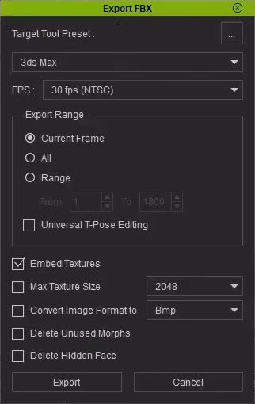
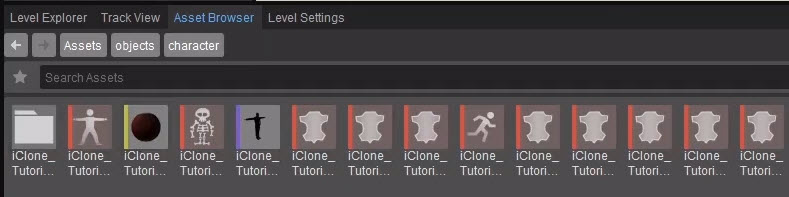
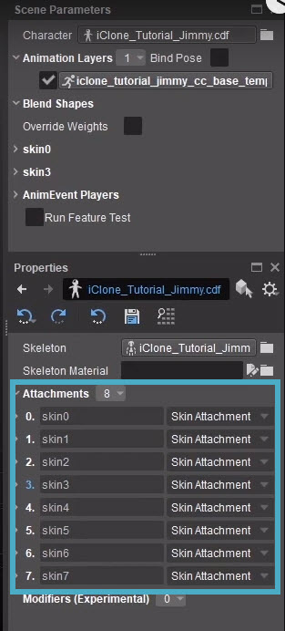
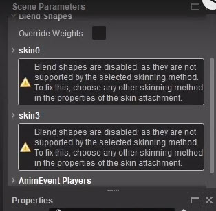
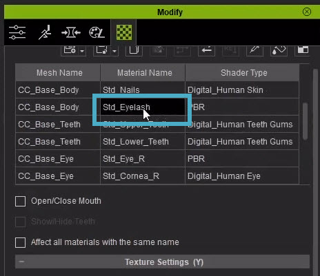
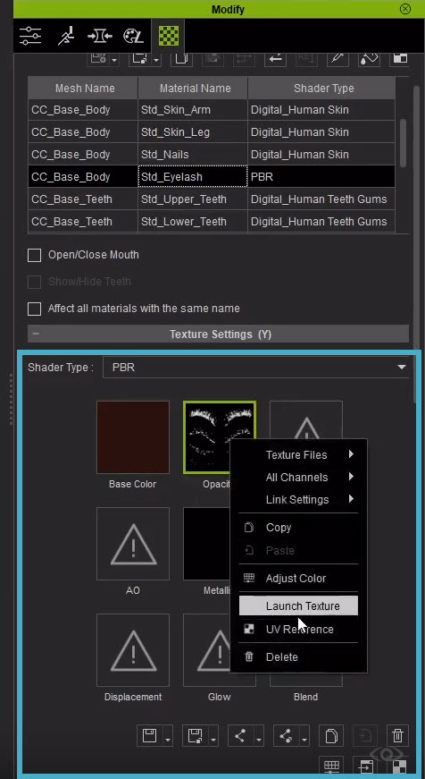
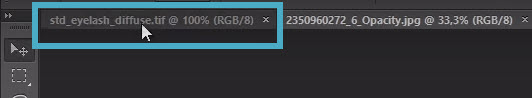
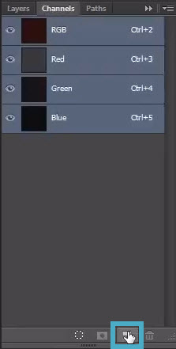
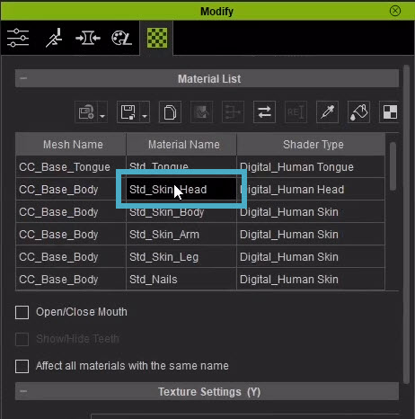

Overview
This tutorial will show you how to import a character that was made with Character Creator and iClone.
This tutorial assumes that you know how to use Character Creator and iClone to create a character and add animations respectively. If you lack this knowledge, please view the video at the bottom of this page to learn the basic steps required for this tutorial.
Exporting the Character from iClone
When you've created your character and assigned animations to it, you'll need to export it as an FBX file. To do this:
- In iClone, go to File → Export → Export FBX. You'll see this window appear:

Export FBX window - For Target Tool Preset, choose 3ds Max (Under FPS, the default 30 fps (NTSC) setting is fine).
- Under Export Range, check All.
- (Optional) For Max Texture Size, include 4k textures by choosing 4096.
Set Convert Image Format to to Tiff.
CRYENGINE requires .tif files (with one F), so it doesn't really matter what you choose here. Since .tiff files have the best compression of the available options, we've chosen this format in our tutorial.Deselect Delete Unused Morphs and Delete Hidden Face.
This is because a bug in version 5.6 that won't let you import the character if these options are checked. In future versions, when this works, it will save you some resources.- Click Export and choose a folder to save your character to.
Importing the Character to CRYENGINE
To import the character, including the animations you assigned to it in iClone, to CRYENGINE, simply drag & drop the .fbx file from the Windows File Explorer into the Asset Browser in CRYENGINE.
- You don't need to open a level first to do this.
- This may take a while.
You will see that this has created several assets; a .cdf file (which is the main tool for the character), a material file, a skeleton, a .cgf file, several skin files and the animations:

Character asset files
Setting Your Character Up Correctly
To make sure the character is set up correctly, you'll have to tweak some settings.
Fixing the Facial Animations
- Open the Character Tool by going to Tools → Animation → Character Tool.
- In the Assets panel, go to Characters → objects → character (or the folder you saved your character in) and double-click on your character's .cdf file.
The character will probably be in a T-pose, and you'll see that all the skin attachments are already attached to your character:
Skin attachments attached - If you check the animations (Asset panel → Animations (objects/character/), you'll see that the facial animations aren't quite right. That's because the skin weights haven't been converted to a different skinning method yet. You'll see this when you check under Scene Parameters → Blend Shapes:

Skin weights not converted
To change the skinning method for the skin weights, check which skin attachments need to be changed (in our example above, this would be skin0 and skin3) and change Skinning Method to CPU (slow) (8 weights, morphs, normals).
Now the facial animations should play properly. - Save your changes.
Checking the Animations
It is a good idea to drag your .cgf into your live environment, so you can adjust textures and animations if necessary. To do this:
- Drag your .cdf file into the Viewport.
- Select it, go to Properties → Animated Mesh properties → Default Animation and click on the browse button next to it.
- Find your animation file (which will be in the same folder as your .cgf file) and open it. To make sure it keeps playing, enable Loop Default in the Properties
Fixing the High Smoothness
You'll notice that the material has a strange, high smoothness to it. To fix this:
- Double-click on the Material file in the Asset Browser to open it in the Material Editor.
Select a sub-material, go to Properties → Lighting Settings → Smoothness and reduce this.
Do this for every sub-material until the smoothness looks normal.
Adjusting the Eyelashes and Hair Textures
Now, the eyelashes and hair need to be tweaked. To do this:
- In the Windows File Explorer, open the folder where all the files for your character are located.
- As mentioned before, you only need the .tif files (with one F!). Delete all the .tiff (with double F!) files.
- The problem with the eyelashes is that there is no opacity in the diffuse texture yet. To fix this:
Open the .tif file for the eyelashes (in this case, std_eyelash_diffuse.tif) in Photoshop. - Now, in Character Creator, open the character, double-click on their head in the viewport and select the eyelashes in the Materials List:

Eyelashes in Materials List - Now below, right-click on the Opacity map and choose Launch Texture:

Launch Texture
Now, this texture will be opened in Photoshop. - Go back to Photoshop and select everything (CTRL + A), copy it (CTRL + C) and switch back to the already opened diffuse texture at the top:

Switching to diffuse texture - Go into Channels and create a new Alpha channel:

Create new Alpha channel - In this new Alpha channel, paste the opacity map (CTRL + V).
- Deselect the Alpha map and select all the other Channels.
- Save the file, overwriting the original texture.
The process is exactly the same for any other hair on your character.
Adding a Gloss Map
The last thing to add is the gloss map. To do this:
- In Photoshop, open the normal map of the head (in this case called std_skin_head_normal.tif).
- In Character Creator, double-click on the character's head and select the head material (in this case called Std_Skin_Head):

Head in Materials List - Right-click on the Roughness map and choose Launch Texture.
- Go back to Photoshop and select everything (CTRL + A), copy it (CTRL + C) and switch back to the already opened texture at the top.
- Go into Channels and create a new Alpha channel.
- In this new Alpha channel, paste the roughness map (CTRL + V).
- Select the Alpha channel and invert the values of the roughness map by pressing CRTL + I.
- Deselect the Alpha map and select all the other Channels.
- Save the file, overwriting the original texture.
Tweaking the Eyelashes and Hair Materials in CRYENGINE
Now that the textures have been properly set up, you'll need to tweak some properties of their respective materials in the Material Editor in CRYENGINE.
Eyelashes and Hair
- Open the material of your character in the Material Editor by double-clicking on it in the Asset Browser.
- Select the sub-material of the eyelashes and change the Shader to Hair.
Adjust Alpha Test until it looks the way you want.
Under Shader Params, there are more properties you can use to adjust the look of the eyelashes.For the eyelashes, it is a good idea to enable Shader Generation Params → Thin Hair. This makes thin hair in your scene look better, not just eyelashes, but also beard hair for example.
Set the Shader for every other sub-material that is for skin to HumanSkin. This makes some nice skin parameters available, like the Melanin amount.
This does not include body parts such as nails, tongue and eyes.
- Now that you have an actual glossiness map within your normal map, the Smoothness values will work better too, so you can see if you need to adjust it some more.
- Save the material by going to the menu in the Asset Browser panel and clicking File → Save, or right-clicking on your material and choose Save.
Video Tutorial
Topic index:
- 0:00 Introduction
- 2:27 Creating a character and adjusting some morphs
- 3:24 Changing cloth
- 4:05 Edit mesh of clipping cloth parts
- 5:40 Smoothing meshes of the character
- 6:00 Setting up a pose to check for additional clipping issues
- 7:29 Introduction to the appearance editor
- 8:17 Introduction to the material editor in CC3
- 9:19 Introduction to iClone
- 9:50 Assign a base animation
- 10:40 Creating facial animations
- 11:35 Export and Import as FBX to CRYENGINE
- 13:45 Character Tool, playing the animations with blendshapes
- 14:55 Play the character with animations in the editor
- 15:31 Adjusting proper settings on some materials and textures
- 16:00 Deleting textures we don’t need in our engine directory
- 16:38 Going through the alpha channel workflow for albedo maps with opacity
- 18:05 Creating a glossmap within an alpha channel of a normal map
- 19:00 Setting up the correct shader types for hair and skin